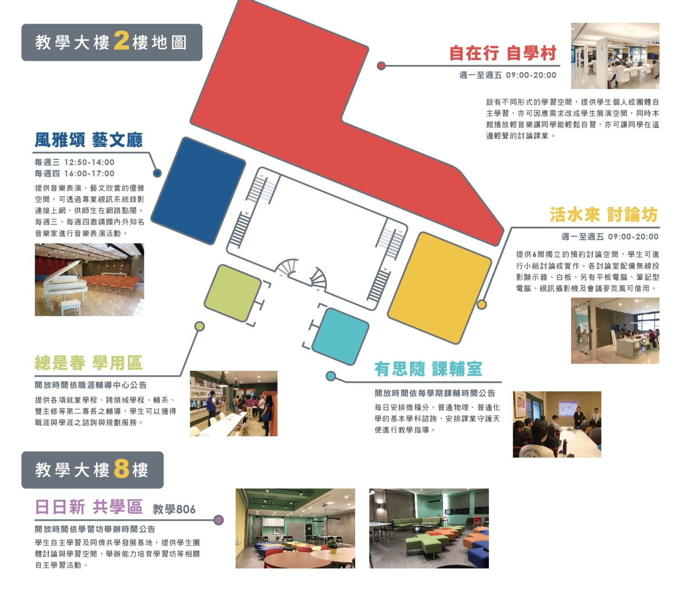

📍 張靜愚紀念圖書館
📚 樓層資源重點
- 5F： 中文書庫、個人研讀室（501-512）。
- 2F： 借還書大廳、資訊共享區（討論室預約）、視聽區。
- B1： 悅讀室（全天候開放）、一般閱覽室。
📍 慶恩樂學園 (真知教學大樓 2F)
建置超過 440 坪的學生學習專屬基地，融合團隊與自我學習教育理念。
⚠️ 112年10月起開放時間調整：
週一至週五 9:00-20:00，週六停止開放。
週一至週五 9:00-20:00，週六停止開放。
自習 / 輕聲討論
自在行 自學村
不同形式的學習空間，伴隨輕音樂，適合個人或團體自主學習。
需預約討論
活水來 討論坊
6 間獨立討論室，配備無線投影與白板，可借用筆電與平板。
課業輔導
有思隨 課輔室
提供共同必修微積分諮詢及課業守護天使指導。時間依公告為準。
職涯諮詢
總是春 學用區
提供跨領域學程、輔系資訊及職涯諮詢，引領學涯發展。
藝文欣賞
風雅頌 藝文廳
每學期舉辦 30 場以上音樂會。週三 12:50、週四 15:50 演出。
8F 同儕共學
日日新 共學區
提供學生團體討論與學習空間，舉辦各類能力培育學習坊。
🖼️ 空間配置圖
樂學園即位於本棟大樓 2 樓。
